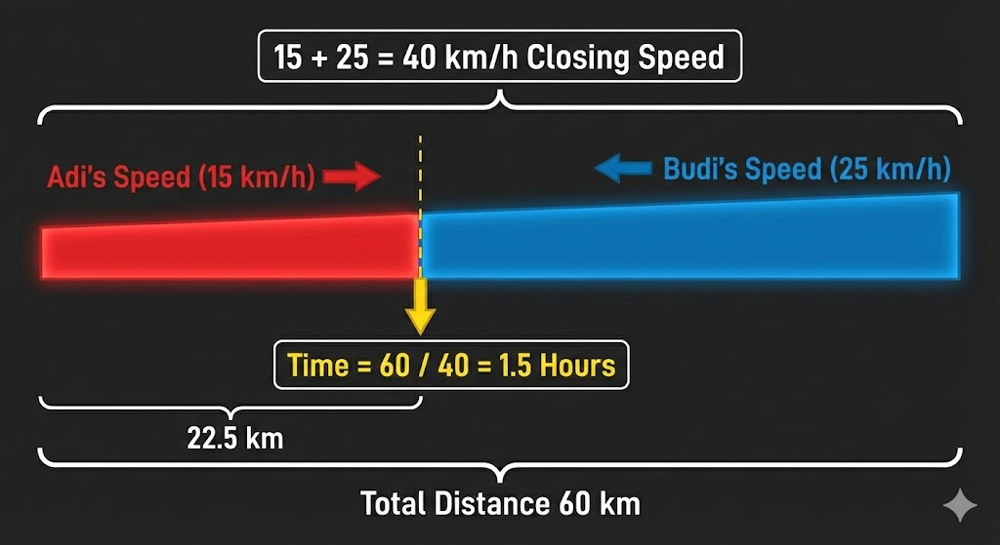

Dua pengendara sepeda, Adi dan Budi, terpisah jarak 60 km. Adi berangkat dari titik A menuju B dengan kecepatan 15 km/jam. Pada saat yang sama, Budi berangkat dari titik B menuju A dengan kecepatan 25 km/jam. Di kilometer berapa (dihitung dari titik A) mereka akan bertemu?
Pembahasan:
Diketahui:
- Jarak AB = 60 km
- Adi dari A ke B, kecepatan 15 km/jam
- Budi dari B ke A, kecepatan 25 km/jam
- Keduanya berangkat bersamaan
Kecepatan relatif:
Kecepatan relatif = \(15 + 25 = 40\) km/jam
Diagram visual pergerakan Adi dan Budi:

Waktu bertemu:
\[t = \frac{60}{40} = \frac{3}{2} = 1{,}5 \text{ jam}\]
Jarak yang ditempuh Adi dari titik A:
\[s_{\text{Adi}} = 15 \times 1{,}5 = 22{,}5 \text{ km}\]
Verifikasi:
Jarak yang ditempuh Budi dari titik B = \(25 \times 1{,}5 = 37{,}5\) km
Total jarak = \(22{,}5 + 37{,}5 = 60\) km ✓
Jawaban: Mereka akan bertemu pada kilometer ke-22,5 dari titik A